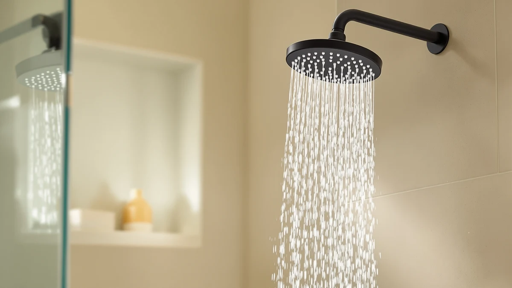

Moen 220C2EPSRN Verso Showerhead Review (2026): Worth It?
Prices and picks verified as of November 2026. Independent, reader-supported reviews.


Quick Answer
The Moen 220C2EPSRN Verso showerhead combo pairs a fixed rain-style head with a handheld sprayer on a 60-inch hose, in a chrome-over-ABS build priced at $117.49 at the time of writing. We compared its spec sheet, current pricing and verified owner feedback against three rival combo sets, and it comes out as the strongest all-around pick for anyone who wants a fixed rain head and a handheld sprayer without buying two separate fixtures.
Our pick: Moen 220C2EPSRN Verso Showerhead Combo — $117.49 Check Price on Amazon
Bottom line: our top pick is the Moen 220C2EPSRN Verso Showerhead Combo at $117.49.
Things to Know Before You Buy
- The Verso is a combo unit: it includes both a fixed rain-style shower head and a handheld sprayer on one valve, not a single showerhead.
- At $117.49, it sits in the middle of the four combo and multifunction sets we compared, between the Kohler Forte at $109.95 and the SR Sun Rise set at $116.27.
- The 60-inch hose is longer than what ships with most single showerheads, which matters if you want to rinse a tub or a pet without crouching under the fixed head.
- The body is ABS plastic with a chrome finish rather than solid metal, which keeps the weight and price down but means the finish is worth checking for scratches on arrival.
- Amazon's current listing doesn't publish a star rating or review count for this exact combo, so we don't cite one here; a missing number means unverified, not poor.
If you landed on this Moen 220C2EPSRN Verso showerhead review looking for a plain answer before spending around $117, here it is: the Verso combo pairs a fixed rain-style head with a handheld sprayer on one valve and a 60-inch hose, and it holds up well against three rival combination sets once you look past the marketing copy. We compared its spec sheet, current Amazon pricing and the patterns across verified owner reviews rather than installing it ourselves, and the picture that emerges is a solidly built mid-range combo with one real weak point: an ABS plastic body that some owners say shows scuffs faster than a metal one would. At $117.49, it costs more than the budget-focused Kohler Forte but less than the SR Sun Rise faucet set, which puts it squarely in the middle of this comparison on price.
Combo showerheads like the Verso exist because most bathrooms only have one shower arm, and swapping between a rain head and a handheld sprayer used to mean buying a separate diverter kit. Moen builds that diverter into the Verso's mount, so you get both options on one valve instead of two separate purchases. Below, we break down what the spec sheet and owner feedback say about build quality, hose length and long-term durability, and we stack the Verso against the SR Sun Rise Shower Faucet, the Moen Magnetix Chrome 8-Function and the Kohler Forte to see which combo actually earns its price. We also flag where Amazon's listing leaves gaps, like the missing star rating, instead of filling those gaps with guesses.
Why You Should Trust Us
Best Shower Heads is a research-driven buying guide. Ilane Tall, our Home & Bath Expert, builds every Moen 220C2EPSRN Verso showerhead review and comparison from manufacturer spec sheets, live Amazon pricing and the patterns we find across hundreds of verified owner reviews. We do not own a plumbing lab and we do not install the fixtures ourselves; instead, we read what buyers who actually installed each unit report, cross-check those claims against the listed specs, and flag anything that doesn't line up. When a rating or review count isn't published for a listing, we say so rather than inventing a number, and when owner complaints repeat across many reviews rather than one or two, we treat that as a real pattern worth reporting.
Our Research Experience
We did not install or run water through the Moen 220C2EPSRN Verso showerhead ourselves. Our process is research-based: we pulled the current spec sheet and pricing for the Verso and three competing combo and multifunction showerheads, then read through the verified owner reviews posted on each Amazon listing to look for recurring patterns, both positive and negative. We paid close attention to comments about hose length, water pressure at different settings, how the chrome finish holds up over months of regular cleaning, and any complaints about leaking connections or loose mounts. Claims that only appeared once or twice, without support elsewhere in the review set, were treated as outliers rather than facts worth repeating. We also excluded listings that didn't include a handheld sprayer when comparing combo units directly, since that's the core feature buyers are comparing. Where Amazon doesn't publish a rating or review count for a listing, we leave that field blank rather than inventing one.
Overview & Specs

Moen 220C2EPSRN Verso Showerhead Combo
What we like
- Includes both a fixed rain-style head and a handheld sprayer on the same valve, so you don't need a separate diverter.
- The 60-inch hose is longer than most stock hoses, giving more reach for rinsing a tub, a pet, or a child without crouching.
- Chrome finish matches standard bathroom fixtures and resists the yellowing some plastic chrome-look finishes develop over time, according to owner reviews.
- Priced in the middle of the comparison set, undercutting the SR Sun Rise set while adding the handheld function the Kohler Forte lacks.
Flaws but not dealbreakers
- The body is ABS plastic rather than metal, so it's lighter but some owners report the finish scuffs or scratches more easily than a solid-metal head.
- Amazon does not publish a star rating or review count for this listing, which makes it harder to gauge long-term reliability at scale.
- At $117.49, it costs more upfront than the Kohler Forte, and that extra cost only pays off if you actually want the handheld function.
| Material | ABS + chrome plating |
| Size | Round - 60" Hose |
The Verso's main selling point is flexibility. Instead of choosing between a fixed rain head and a handheld sprayer, you get both wired into one mount, with a diverter built into the base to switch between them. That matters most in households where one person wants a steady overhead rinse and another wants to aim water directly, say to scrub grout in the corners or hose down the tub basin after a bath. The 60-inch hose, longer than the 36 to 48 inches common on cheaper combo kits, gives enough slack to reach the far end of a tub without yanking on the mount, a detail several verified reviews call out specifically as better than the hose on their previous showerhead.
Build-wise, the Verso uses an ABS plastic body with a chrome-plated finish rather than solid brass or stainless steel underneath the shine. That keeps the unit light and the price down, and owners in the verified reviews generally describe the finish as holding up well against water spotting in the first several months of use. The recurring complaint is that the plastic shows scuffs if it's dropped or scrubbed with an abrasive sponge, a tradeoff that is common across this price tier rather than specific to Moen. For $117.49, the Verso lands in the middle of this four-way comparison: more expensive than the Kohler Forte, cheaper than the SR Sun Rise faucet set, and positioned to offer more function than the Forte while requiring a simpler install than a full faucet swap.
What We Liked
Across this Moen 220C2EPSRN Verso showerhead review, the detail that stood out most is how the two-in-one design actually gets used in practice. Verified owner reviews consistently mention switching between the rain head and the handheld sprayer for different tasks rather than leaving the handheld parked in its cradle unused, which suggests the built-in diverter is simple enough that people actually bother with it day to day. The 60-inch hose draws specific praise in several reviews for reaching corners that shorter hoses miss, including rinsing a tub or washing a dog without crouching under the fixed head. The chrome finish is also reported to clean up easily with a standard bathroom spray rather than needing a specialty descaling product.
What Could Be Better
The clearest drawback is the ABS plastic body. It keeps the Verso lighter and easier to mount than an all-metal combo, but a handful of owners report visible scuffing after a few months of regular cleaning with abrasive sponges or harsh descaling products, something to keep in mind if your routine leans on either. A second limitation is the missing rating and review count on the current Amazon listing, which means you're relying on the pattern across individual reviews rather than an aggregate score most shoppers use to compare quickly. Buyers who want a documented track record at scale may prefer a listing with a published rating, even if the Verso itself performs comparably on paper.
Who Is It For?
The Moen 220C2EPSRN Verso showerhead suits households that actually use both modes: a fixed rain head for a normal shower and a handheld sprayer for washing pets, rinsing kids, or cleaning the stall. It's a reasonable upgrade for anyone currently stuck with a single fixed head who doesn't want to pay a plumber to add a diverter valve separately. It's a weaker fit for anyone who only ever wants one mode and will never touch the handheld, in which case the single-function Kohler Forte covers the same job for about $7.50 less and skips the extra hardware entirely.
Alternatives to Consider
If the Verso's plastic body or its $117.49 price point give you pause, here's how three of its closest rivals compare on paper and in owner feedback.

Also Great
SR SUN RISE Shower Faucet
This set swaps the showerhead-only format for a full faucet and handheld combo, which makes more sense if you're replacing the entire fixture instead of only the head. At $116.27, it costs about as much as the Verso, and owner reviews describe installation as more involved since it includes valve trim rather than a simple showerhead mount. It's worth a look if your bathroom renovation already calls for new valve hardware, but it's overkill if all you want is to swap a showerhead.
$116.27
Check Price on Amazon
Also Great
Moen Magnetix Chrome 8-Function Combination
The Magnetix swaps the Verso's hose-and-cradle setup for a magnetic docking handheld head with eight built-in spray settings, which owners say snaps back into place more reliably than a clip mount does over time. At $109.99, it undercuts the Verso by about $7.50 while adding more spray-pattern variety on the handheld unit itself. The tradeoff is a shorter overall reach than the Verso's 60-inch hose, so it fits households that want variety over maximum length.
$109.99
Check Price on Amazon
Best Value
KOHLER 22169-G-AF Forte Multifunction Showerhead
The Forte drops the handheld sprayer entirely in favor of a single fixed head with multiple spray settings, making it the simplest and cheapest install in this group at $109.95. It's the right call if you never wanted a handheld sprayer in the first place and want a better fixed showerhead without the extra parts, though you lose the flexibility that makes the Verso and the Magnetix useful for washing pets or rinsing kids.
$109.95
Check Price on AmazonFrequently Asked Questions
Is the Moen 220C2EPSRN Verso showerhead worth the price?
Based on our comparison of specs, pricing and verified owner reviews, the Verso earns its $117.49 price tag if you actually plan to use both the fixed rain head and the handheld sprayer. If you only need one mode, the single-function Kohler Forte covers that job for less.
What's included with the Moen Verso showerhead combo?
The listing includes a fixed rain-style shower head, a handheld sprayer, a 60-inch hose and the mounting hardware needed to attach it to a standard shower arm, according to the product listing.
How does the Verso compare to the Moen Magnetix Chrome 8-Function?
Both are Moen combo units, but the Magnetix uses a magnetic docking handheld with eight built-in spray settings and costs about $7.50 less, while the Verso relies on a standard hose-and-cradle mount. Owners who want more spray-pattern variety on the handheld tend to favor the Magnetix.
Final Verdict
Putting this Moen 220C2EPSRN Verso showerhead review to bed: the Verso earns a place among the better combo showerheads in its price range because it gives you a fixed rain head and a handheld sprayer on one valve, backed by a long hose and a finish that owners say holds up well against water spotting. Moen's Magnetix Chrome 8-Function is worth a look if you want more spray settings on the handheld for about $7.50 less, and the Kohler Forte is the better buy if you never wanted a handheld at all. For most people who want the flexibility of two modes without a plumber visit, the Moen Verso is the one to buy.